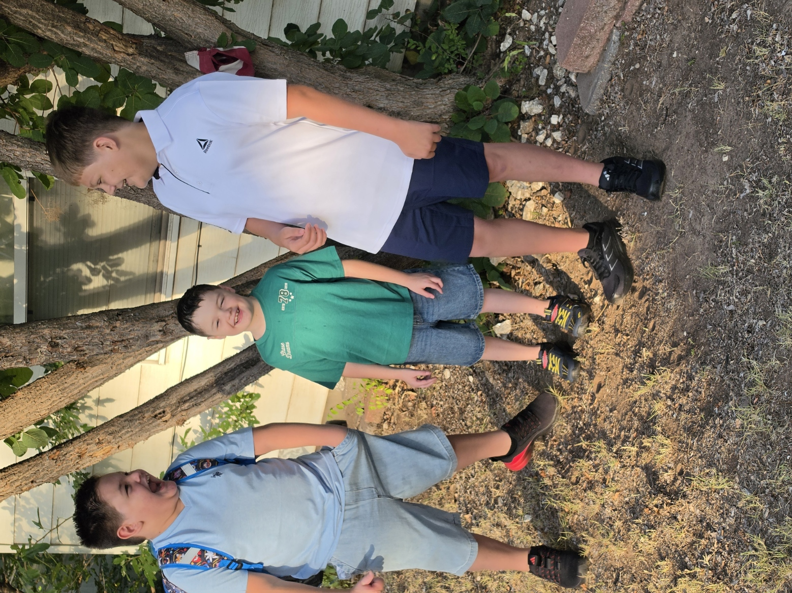
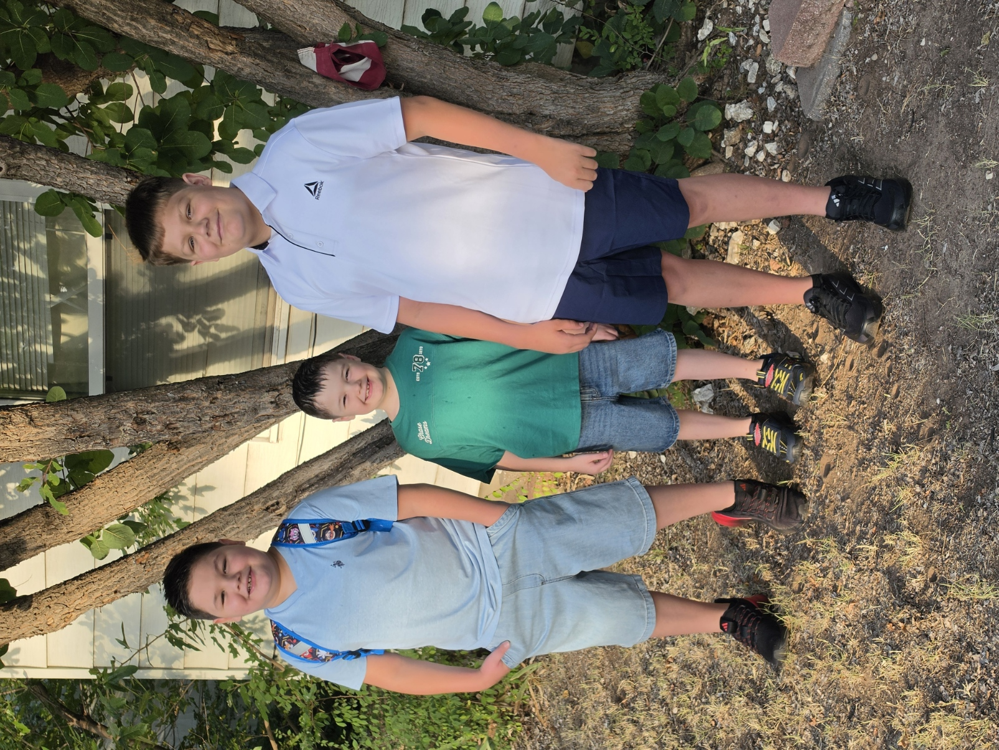
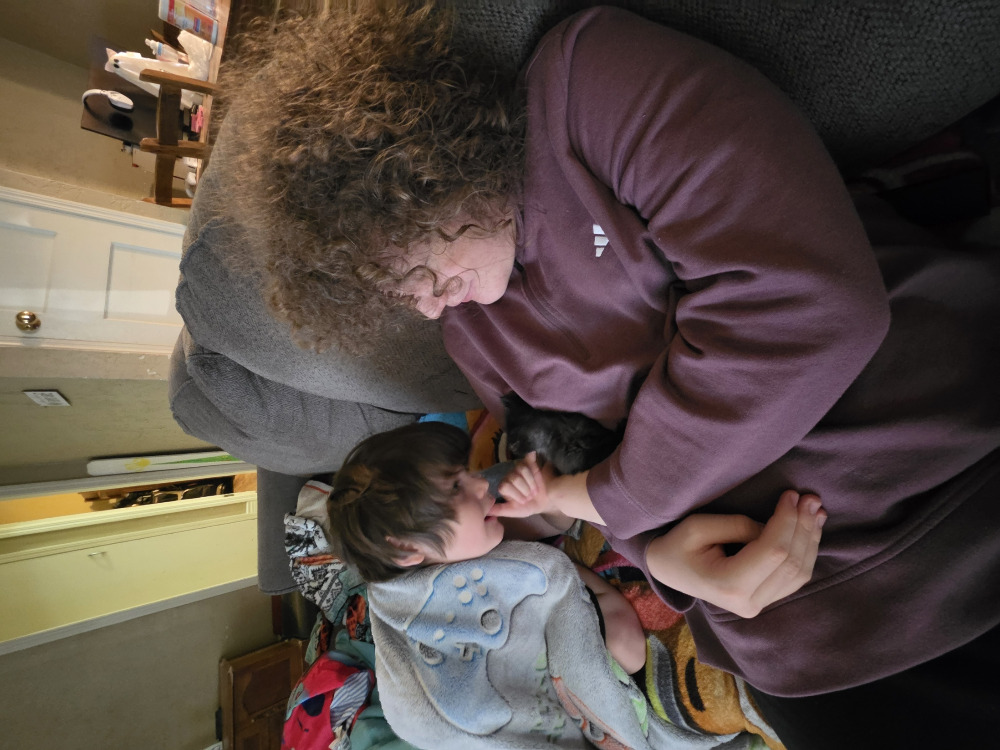

My Own Creation
A dreamy family adventure page for camping, camping memories, and future trips.
One day, our family will take a camping trip together.
With five kids, we are looking for a fun place close to Oklahoma.
We want adventure, fresh air, and memories that feel close to home.
Plan Our Camping TripCamping ideas near Oklahoma
- Lake camping for fishing and relaxing
- State park cabins for an easy family trip
- River or creek sites for hiking and exploring
- A weekend trip with campfires and stargazing
Our favorite family memory
We only went camping once as a family, but it was amazing.
We went to Canton Lake, and we had the best time ever.
Dream trips for our family
Branson, Missouri would feel like a real dream come true.
Going back to Canton Lake would be more likely, and another trip to OKC would be so nice too.
The boys loved it when we went, and a budget of $2,000 to $3,000 saved up would make it possible.
Saving progress toward our next family trip
Our boys
Here you can add pictures of your sons and keep these memories close.



Where we could go next
Branson, Missouri
Dreamy shows, family fun, and a memory-worthy vacation close enough for a road trip.
Canton Lake, Oklahoma
The place we loved already—lake time, quiet evenings, and an easy comeback trip.
Oklahoma City
A city adventure with parks, museums, and a shorter trip for the whole family.